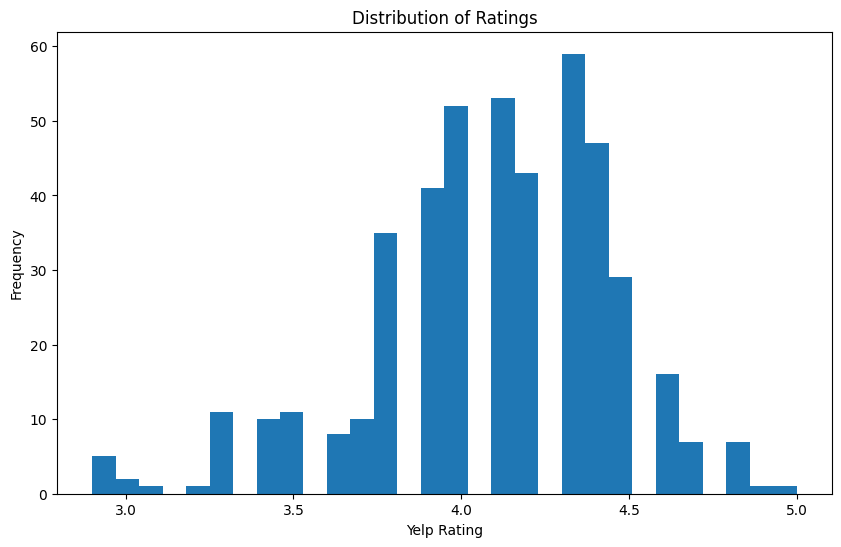
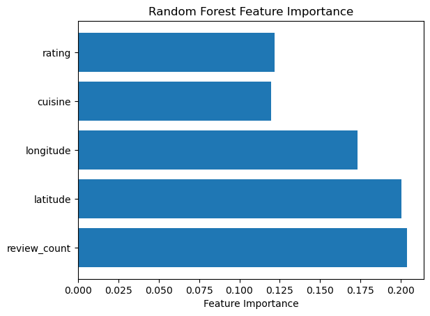

Food for Thought: A Joint Investigating of the Socioeconomic Food Gap and Yelp Ratings in the DC area
Lizzie Healy
Rachna Rawalpally
DSAN 5000
Georgetown University
December 16th, 2024
Section I. Introduction
The Washington District of Columbia (D.C.) area represents a culturally and economically diverse cohort of people. This diversity is mirrored in the vast and unqiue selection of dining options, ranging from fast-food joints and cafes to steakhouses and fine-dining available for the D.C. native and out-of-towners alike. Just like any large metropolitan area, these establishments are mostly packed in with the shopping and businesses, however, they are also sprinkled throughout the surronding suburban areas. In addition, DC is home to both more affluent and less affluent areas and neighborhoods somewhere in between. This lead us to wonder about the makeup of the local dining options across the socioeconomic specturm. Studying the makeup of successful areas is pertinent to more than just academic research, but is integral to understanding the urban economy and developing strategic city planning to benefit each indivudal in a commmity.
As Kuang demonstrated “information on consumption amenities … can improve our implicit market measures of the value of these amenities, and has incremental effect on sales prices of nearby properties” (Kuang 2017). In layman’s terms, there seems to be some correlation between quality restaurants and higher housing prices. Taking this conclusion one step further, we attempt to investigate the direction of the effect, particularly whether better neighborhoods generally have better restaurants.
To investigate this question, we had to take a step backward and understand what exactly consitutes a “good” restaurant. This brought up the age old economic problem of finding a way to quantify an objective measure, in this case, quality. Our solution emerged from the world-wide-web in the form of an ever-growing, popular reviewing site by the name of Yelp.com. What Yelp offers is efficiency in decision-making for customers seeking a particular dining experience, at the same providing a space for customers to rave or condemn a restaurant of their choosing. And from these reviews, a rating score is born, hence our quantifiable measure of quality. This paper then branched in an additional direction to delve deeper into the understanding of a Yelp score in order to more accurately answer our initial question regarding better neighborhoods having better restaurants. We needed to verify that a yelp score is a reliable signal of quality.
In this report, we will delve into both directions of research, seeking to generate an understanding of the makeup of a Yelp score and the bias of restaurant options in DC. We will address the following questions in order to guide our research:
- What factors are most important to a high Yelp Rating score?
- Do better neighborhoods (measured by median income) generally have better restaurants (measured by Yelp ratings)?
- Are certain types of restaurants more likely to be rated higher on yelp?
- Does price of the restaurant factor into Yelp rating?
- Is it possible to predict the Yelp rating of a restaurant based on its features?
The following report will begin with the objective in Section II, followed by an outline of the key findings in Section III. In Section V, the methodology will be explained. Section V will delve into the data set and present helpful visualizations to aid in the presntation of the findings. In Sections VI and VII, we will provide the broad implications both societal and business-oriented and offer a call to action. We will conclude in section VIII.
Section II. Objective
We aim to analyze the trends and patterns of Yelp ratings, determining if there are speicific restaurant qualities that lend to a higher Yelp score. In addition, we aim to determine is there is a food gap present in the DC area in terms of having better restaurants situated in more affluent neighborhoods.
Section III. Key Findings
- Certain factors have a strong relationship:
- The number of reviews and the price range of the food.
- The type of cuisine and the restaurant’s Yelp rating.
- The median income of the neighborhood and the number of reviews.
- Most Important Factors:
- The type of cuisine, number of reviews, and the restaurant’s location (latitude and longitude) were the most influential features.
- Insights for Restaurant Success:
- While location (latitude and longitude) is important, we found that median income in a neighborhood has little impact on food pricing.
- The biggest takeaway is that predicting how people rate or choose restaurants on Yelp is challenging because many factors play a role. However, focusing on location, the number of reviews, and the type of cuisine provides a solid foundation for understanding what drives success.
Section IV. Methodology Overview
We analyzed over 600 restaurants, bars, and cafes in Washington, DC listed on Yelp. We focused on key details such as price range, Yelp ratings, location, zip code, and type of cuisine. To enhance our analysis, we grouped price ranges and cuisine types and incorporated additional features, such as median income by zip code from the U.S. Census Bureau. These added details allowed us to uncover deeper patterns and trends in the data. By exploring and modeling this information, we aimed to better understand what factors contribute to the success of these businesses and what makes certain establishments stand out.
Section V. Visualizations

Figure 1: Density plot of the zipcodes in the DC area. The minimum income is $34,252, the maximum median income is $235,511, which the median income centering around the $125,000 mark.

Figure 2: Distribution of Yelp score ratings for DC area restaurants. The lowest rating is a 2.9, which is given to Harry’s Pub, Casey’s Coffee & Sandwiches, and The Rooftop. The highest rating is a 5.0 belonging to OPO Bar & Lounge. The median score is a 4.1, indicating most of the restaurants in the sample are above average.

Figure 3: The distriubtion of restaurants falling into each manufactured category. Yelp initially places restaurats into over 50 separate categories, thus for clarity and efficiencies sake, we created 10 aggregated categories. The histogram shows that the dataset contains mostly cafes and bars and few entertainment-based eateries, which are establishments that combine food and entertainment such as Puttery, which is a mini golf course offering a full bar and menu and La Cosecha, which is an outdoor and indoor market that offers food choices.
Figure 4: Percentage of restaurants that fall into each Yelp pricing category (1-4 dollar signs). Our sample is heavily skewed towards 2 dollar sign restaurant, indicating an average price per meal per person of $11-30. The dataset has very few high priced restaurants (4’s), which are equal to $61 or more per person per meal price range.
Figure 5: Crosstabulation of Cuisine Types and Price Range. Here we can begin to see the breakdown of yelp ratings, particularly based on the type of cuisine and by extension the type of restaurant. The restaurant are largely spread across the Yelp ratings, however, we do see that bars have the highest and lowest ratings and cafes have the lowest rating. In addition, American style restaurants fall almost entirely in the 4.0 to 4.5 rating range.

Figure 6: Heatmap of the correlations between the numeric variables within the Yelp dataset. We see there are few strong correlations between any variables and the yelp rating score. There is an emerging correlation between the number of reviews and the price of a restaurant, which could preliminarily indicate that more reviews correlates with a higher price range, however, the correlation value is quite small at only 0.18. Importantly, the correlation between median income and yelp rating is extremely small and even slightly negative.
Figure 7: Median Income versus Yelp Rating resultig from K-Means procedure. There are no clear clusters, lots of overlap, and points that are dispersed across both axes. This indicates that there is no strong correlation between the yelp rating and the median income of the area.

Figure 8: T-SNE results with a perplexity value of 50, color-coded by median income levels. There are two emerging clusters near (-10, 15) and near (0,10). This indicates some small relation between the features of the restaurant and the income of the neighborhood, especially when we account for the global structure of the data and look at more broad relationships between points.

Figure 9: Decision tree predicting the Yelp ratings based on key features in the dataset. The root is longitude and the number of reviews, indicating that these are the most influential features in predicting restaurant ratings. Latitude, number of reviews, and cusine type frequently appear in subsequent splits, further emphasizing their importance. This suggests that geographic features like longitude and latitude, along with number of reviews, are crucial for predicting a restaurant’s rating.

Figure 10: Feature Importance results of random forest prediction of price range of a restaurant. We observe an accuracy level of 67% in predictig the price range based on the chosen variables (rating, cusiine type, longitude, latitude, and number of reviews). The F1 macro average score is quite low at 0.27, indicating imbalances across different classes.

Figure 11: Confusion matrix for results of the model attempting to predict restaurant rating, high vs low rating. The key factors found ot be influencing this prediction were median income, latitude, and longitude, with an overall accuracy of 70%. The model yields precision of 69% and recall of 95% when precting high rating restaurants. The model drops to 77% precision and 29% recall for low rating restaurants. This indicates that many restaurants with lower ratings are being misclassified as having high rating, highlighting an imbalance in the predictions.
Section VI. Societal/Business Implications
This study set out to determine what is driving Yelp restaurant ratings and whether there is bias in terms of better restaurants being situated in better neighborhoods. What we found is that the old adage: “location, location, location” does hold some water. The precise location of a restaurant is marginally important, however, the makeup of that surronding area, particularly the economic status, is only minorly important to achieving restaurant success. The type of food being served is crucial as well: finding the correct type of food to serve, either in terms of understanding what is popular in certain areas or finding that gap in the market and filling it, can boost success. Further, what does seem to matter most is exposure: more reviews typically equals a higher rating. This is almost unsuprising, as we continue to charge on in the age of social media, that online exposure can make or break a business. Both from a social and business perspective, our findings lead to a need for a expansive marketing strategy, one that includes reaching as many people as possible. This may be more of a comment on society as whole, than the restaurant industry alone, but it seems both are headed in the direction of online influence being the driver of success. Reaching the easily persuadable demographic could lead to almost immediate success, however, the question remains whether that success is long-term.
Section VII. Call to Action
- Restaurants should prioritize generating reviews, as having more reviews increases visibility and success. Encouraging customers to leave reviews by offering discounts.
- Location continues to be a critical factor. Since Washington, D.C. is a major tourist destination, restaurants should aim to be near metro and bus stations and close to popular tourist attractions.
- Selecting a popular or trending cuisine can enhance a restaurant’s potential. Offering dishes that appeal to local tastes can draw in more customers.
- Neighborhood Income Doesn’t Determine Pricing: Median income in the neighborhood does not have a strong impact on restaurant pricing, so it’s wise to offer a broad range of prices to attract a wider audience.
- By focusing on these key factors—generating reviews and having flexible pricing, restaurants can improve their chances of standing out on Yelp and thriving in the competitive D.C. food scene.
Section VIII. Conlusion
In this project, we found that the type of cuisine, number of reviews, and the restaurant’s location were the most important features for predicting Yelp ratings. Specifically, higher ratings and prices were more strongly associated with factors such as review count, cuisine, and location, while the median income of the neighborhood had no significant impact on pricing. These insights highlight the key factors that can help restaurants thrive in Washington, D.C. Understanding these patterns allows restaurants to pinpoint areas for improvement and focus on what truly matters. As highlighted in one article, restaurant success contributes significantly to local economic growth and employment rates. In today’s data-driven world, it is essential for restaurants to use these insights to their advantage. Our findings align with trends observed in other studies. For example, one article identified location as the second most important factor for success, further emphasizing its importance. Similarly, both our analysis and prior research show that the number of reviews greatly benefits restaurants by boosting their visibility and credibility. However, predicting restaurant success remains challenging because it depends on many variables. For instance, one study focused on college towns revealed that reviews played a smaller role in those areas, suggesting that the significance of certain factors can vary by context. To further expand this research, it would be valuable to analyze specific reviews to identify key words or themes that contribute to positive or negative ratings. Examining photos shared by customers, as well as exploring factors like takeout, delivery options, and visit timing, could provide deeper insights. Additionally, extending this analysis to nearby cities in Virginia and Maryland would offer a broader perspective. This project provides a strong foundation for understanding the complexities of restaurant success on Yelp and presents numerous opportunities for future exploration.